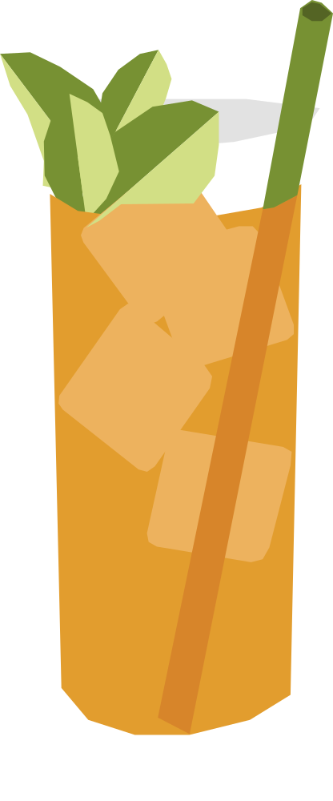

¿Qué tan cansado están los soldados?
Creado en 1942 por el bartender Joe Scialom en el Shepheard's Hotel de El Cairo, para aliviar las resacas de los oficiales aliados durante la campaña del norte de África en la Segunda Guerra Mundial. Se dice que su nombre venía directamente de cómo los soldados describían su propio estado.
RECETA
- 30 ml bourbon
- 30 ml gin
- 15 ml jugo de lima
- 2 golpes de Angostura bitters
- Ginger beer
- menta fresca
- Llena un vaso con hielo.
- Agrega el bourbon, gin, jugo de lima y Angostura.
- Completa con ginger beer y mezcla suavemente.
- Sumergir un palo de madera tipo dawa en miel y colocarlo en el coctél para seguir mezclando
- Decorar con una ramita de menta
Vaso: Vaso alto o tarro de cobre